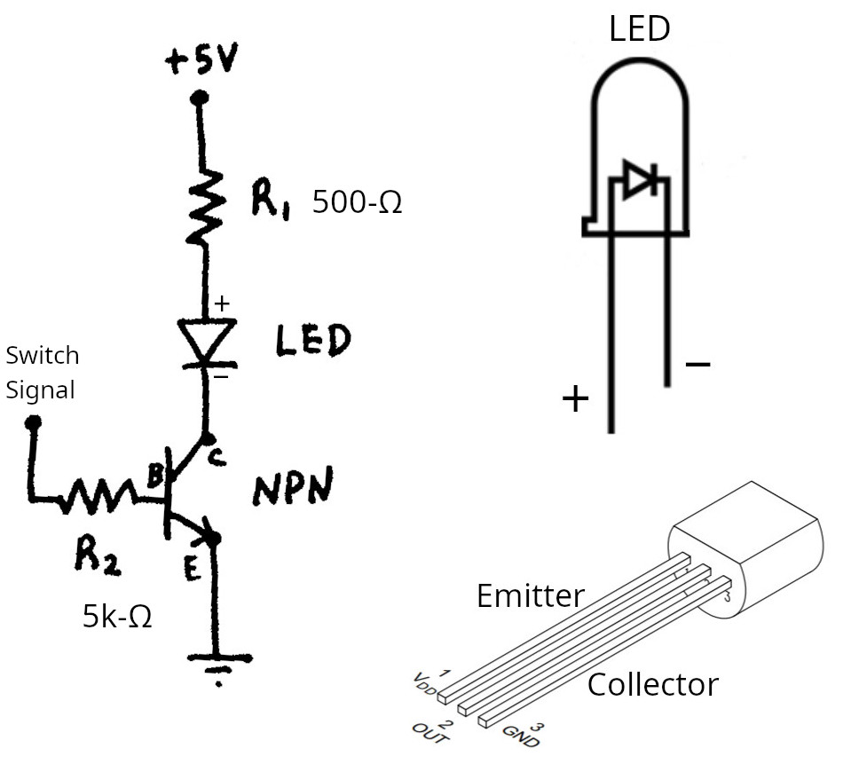

Lab B1 - DC Circuits
Table of Contents
In this lab you will explore the basics of electric circuits. There is a whole lot to cover here so lets dig right in.
1. Basic tools for circuits (20 mins)
TODO: Take 4 pictures (one for each part) in lab and insert them here
Multimeter
- Basic measurement device to measure frequently used electrical props
- Measures: voltage, current, resistance, capacitance, etc
- Has two modes: high resistance for voltage, resistance, low resistance for current (must break the circuit)
- Rough and tumble device which can be bumped and shoved. Not super expensive ($30-$100+)
- Can measure AC signals but restricted to RMS values (else use an oscilloscope)
Power Supply
- Electronic circuit which plugs into wall voltage - DANGER (110V-60Hz AC with a boatload of current) and changes its properties
- Output can be DC (direct current): where voltage is a constant value (ex: +5V for USB)
- Output can be AC (alternating current): keeps its sinusoidal nature. usually reserved for power generation and transmission
- Fancy AC signals are usually created with a different device called a signal generator
Connectors
- Wires, cables, clips, crimps, etc. More types than can be described here
- Banana clips have a radial spring which makes firm contact for powerful circuit connections
- Alligator clips are jaw like clips which use a spring to create contact
- BNC connectors are cylindrical clips used for sensitive measurements (push in and twist to connect)
Breadboard
- used to create basic circuits and examine output (ex: voltage)
- The breadboard is an educational tool (never used by pros for actual projects) which lets you create and test circuits very quickly. warning: breadboards also have large stray capacitance which is very bad for any circuit containing capacitors.
- Holes on the long edge are connected with a metal clip. The two rows on each long edge are normally reserved for the power bus, one positive potential and one ground.
- Holes in the center (normally 6 holes connected in a row) are used to create the circuit
- series connections: circuit elements span each leg between the inner rows, like a leapfrog
- parallel connections: circuit elements share a common row with another circuit element, giving multiple routes for current to flow
Other bench devices
- Soldering station - device used to melt a special metal mixture called solder (tin and lead). This device makes a permanent connection between electrical components. Solder also contains flux which cleans the surface to promote bonding and the fumes are toxic :( You may now see the advantage of using a breadboard.
- Oscilloscope - very important device more sophisticated way to measure voltage and display its behavior as a function of time on a screen. This is the logical extension to a multimeter. This is the most used device of many hardware focused Electrical Engineers.
- Signal Generator - special circuit which can output a voltage which oscillates in time. Output can be sinusoidal, square, sawtooth, or even custom. The frequency is adjustable between 1Hz and 100MHz (1GHz costs $1000, 20GHz costs around $100k). Usually the output voltage/current is weak, so signals must be boosted with other semiconductor circuits.
- LCR Meter - Uses properties of inductor-capacitor-resistor circuit dynamics to more accurately measure passive components. This device leverages the same principles as radios (resonance) to verify components meet design specs.
- Network (spectrum) analyzer - used for designing and testing high-frequency networks, filters, matching circuits, and antenna systems
- Logic analyzer - used for debugging and verifying digital systems (binary circuits where voltage is either high or low)
1.1. Make your first circuit and measure the voltage
- Plug in a desktop power supply to the wall outlet. Turn the device on and set the output to DC.
- Use the probes from the multimeter to measure the voltage difference between the DC output. Adjust the output to create a voltage of 9V
- Place R1 and R2 in series on the breadboard so current must go through R1 then R2. (charges are on a single-lane road, no passing)
- Left side of R1 into row1, right side into row5
- left side of R2 into row5, right side into row10
- Then connect power supply between row1 and row10 (skipping over 5)
- This forces the electrons which arrive at row5 to flow through r2 to row10 (series).
- Connect the power supply to each end of the circuit (+9V on row1 and Ground on row10 in above example). Congratulations, you have made an electrical circuit!
- use the multimeter to measure the voltage Before continuing, make sure the red probe is connected to the Voltage port at the bottom right. With the circuit “on” (connected to the power supply) place the multimeter probes over each resistor. First measure \(\Delta V_1\) and then measure \(V_2\)
Checkpoint:
- Sum the two voltages you measured over the individual resistors in step 5. Check to make sure \(\Delta V_1+ \Delta V_2=+9~V\)
2. Resistors (40 mins)
Resistors are very cheap devices which are required in almost every circuit. They are simply conductors which have a bit of impurity mixed in, making the substance absorb some of the energy from the flowing electrons, thus heating up. Resistors come in many shapes and sizes as they are used in almost every circuit, but two types are common for standard low power low voltage DC circuits:
Thru-hole resistors
These come with two long wires which can be fed through a hole made in a printed circuit board (PCB). Each end can then be soldered (with molten metal!) to the pad of the PCB to make a secure, reliable, and low resistance connection. They normally come with “color bands” which you can read, but meh this is boring. Conveniently this type also work with a breadboard.
Surface mount resistors
We will not use these lab, but they are worth mentioning as they are more common for modern circuits. These resistors shed the wires and look like little rectangles, normally with a black band in the center. This type also saves money as no hole is required in the fiberglass PCB.
2.1. create a resistor circuit
- pick 3 resistors of different values. Measure the resistance of each resistor individually (while disconnected) using the multimeter. Set the dial to \(\Omega\) and place the probes across the resistor. (ask for help if confused) \[R_1= \qquad \qquad \qquad R_2= \qquad \qquad \qquad R_3=\]
- Create a circuit with a combination of series and parallel connections (make your own circuit diagram). For example: connect R1 and R2 end-to-end for series, then attach R3 in parallel with those two. Finally connect one end of the circuit to the voltage source and the other to ground.
Turn the power supply on and measure the voltage over each resistor. Make sure the probes are connected black-COM and red-V. Switch the multimeter to measure DC Voltage (\(\bar{V}\) is for DC and \(\widetilde{V}\) for AC) and place the probes over each resistor while the circuit is on and connected. Record your findings:
\[\Delta V_1= \qquad \qquad \qquad \Delta V_2= \qquad \qquad \qquad \Delta V_3=\]
Calculate the amount of current using Ohm’s Law : \(\Delta V = I \, R\)
Calculated Values for current:
\[I_1= \qquad \qquad \qquad I_2= \qquad \qquad \qquad I_3=\]
How to measure current: You must break the circuit to measure current! Think of current measurement as analogous to measuring fluid flow in a pipe. To measure flow you can use a “flow meter” but this meter must be placed in-line with the pipe. You have to cut the pipe open, place the device in, and then reconnect. Multimeters work the same way. You will end up using the probes of the device itself as part of the wiring in the circuit when measuring current this way.
The multimeter can measure current (I), but mode of operation must be changed by plugging the probe into a different plug. Measurement of high current requires a low resistance device which is accessed by plugging in the probe to the current (10A) port the bottom of the device. Please remember that the multimeter is vulnerable to over-current in this state. The 10A plug has 0-ohm resistance to COM which will allow a power supply to burn up its fuse.
Break the circuit at each resistor and measure the current which flows. To measure current through R1, open the wire leading to R1 and place the meter (in current mode) in series where the break was made. ask for help if confused. Record your findings:
Measured Values for current: \[I_1= \qquad \qquad \qquad I_2= \qquad \qquad \qquad I_3=\]
Checkpoint:
- Compare the measured and calculated values for current in each part of the circuit
3. Capacitors (20 mins)
There is quite a variety of types of capacitors. Each type uses a different geometry and/or material to change the way charge is stored.
(polarized) electrolytic capacitor (1muF to 1F)
Polarized with a designated positive and negative terminal. wears out mostly because of heat causing a dry-out of the electrolyte. Poor for high frequency AC circuits. Mostly used for the “power” side of circuits. Avoid use in timing or triggering circuits because of slow dynamics and a self induction effect called “dielectric soakage” where the cap cannot discharge its entire field.
(unpolarized) Ceramic Disk capacitor (1pF to 500muF)
Low capacity but highly durable caps which are also somewhat cheap. Simple geometry of a bunch of parallel plates separated by a very hard dielectric (ceramic rock). class 1 (NP0 C0G up to 1muF) are used heavily in RF applications, while class 2 have too much variation in capacitance with voltage and temperature (X7R is somewhat stable, Y5V are cheap but capacitance can vary up to 70% during operation). Avoid cheap ceramics for any sensitive circuits, especially filtering as they change capacitance (and thus the filtered frequency).
(unpolarized) surface-mount Ceramic Disk capacitor (1pF to 1muF)
Same stuff as above, but slammed into a tiny device. This is the most used cap in actual circuits in the wild.
(unpolarized) Film Capacitors (50pF to 500muF)
Mostly thru hole type. Tight tolerance and low leakage, stable with temp and voltage. But they are high priced and somewhat low density (larger devices). Sometimes material used to manufacture the caps are hard to identify (mylar/polypropelene/polyester). Not good for high temperature environments because the plastic can melt.
(polarized) Tantalum (1muF - 1000muF)
More reliable long term solution for electrolytics (no wearout). Generally lower voltage than electrolytics. Danger: polarized and if you reverse bias them, they tend to heat up and light on fire!
(unpolarized) Mica Capacitor (1pF -> 10nF)
Commonly used in RF circuits. Very stable caps but low capacitance and fairly expensive.
Variable Mechanical Capacitors
Trimmer caps and mechanical variable capacitors are used in radios. Wait for magnetic fields and AC circuits to see why!
3.1. Create a circuit with three capacitors
How to discharge a capacitor: Discharge the capacitors by disconnecting from the circuit and using a \(1k-10k\Omega\) resistor to connect each lead together (and also to ground, but you are a reasonable ground for these small caps). The resistor is necessary for large caps to avoid large currents and possible damage to the cap.
- Gather a combination of three Ceramic Disc capacitors and/or Film Capacitors. You can use electrolytic, but be careful to pay attention to polarity (+ vs -)
- Use the multimeter on the capacitance setting to measure each capacitor. Measured in Farads: picoFarads(e-12) nanoFarads(e-9) or maybe microFarads(e-6). A large 1-farad electrolytic cap full of charge can be outright dangerous! \[C_1= \qquad \qquad \qquad C_2= \qquad \qquad \qquad C_3=\]
- Do not use breadboard or power-supply for this part. Connect all three of the capacitors together in parallel using two separate alligator clips. Do not connect this circuit to the power supply, the multimeter applies its own test signal to make this measurement.
- With the circuit disconnected, use the multimeter to measure the capacitance over all 3 capacitors in parallel \[C_{\text{parallel}}=\]
- Do not use breadboard or power-supply for this part. Connect all three of the capacitors together in series using two separate alligator clips. Do not connect this circuit to the power supply, the multimeter applies its own test signal to make this measurement.
- With the circuit disconnected, use the multimeter to measure the capacitance over all 3 capacitors in series \[C_{\text{Series}}=\]
Checkpoint:
- Sum the values of each of the three capacitors you had in step 2. Is this sum equivalent to the parallel or series combination?
- Is the value of the series capacitors larger or smaller than each individual capacitor?
- Can you calculate the theoretical value for this equivalent capacitance?
4. Semiconductor devices (40 mins)
This section is way too large to cover even in a full class, let alone a single lab. This type of device uses quantum effects to do magical things, like make switches with operating frequencies in the gigahertz range (switch on/off 1 billion times per second) or create 1-way wires which blocks current flow in the backwards direction. New applications are commonly discovered, with FETs gaining widespread adoption in the last couple of decades (MOSFET especially). Here are some of the most common devices you will see in the wild:
Diode
A single N-P junction which restricts flow of current in only one direction. This restriction of current is induced because of the bias (or voltage) placed across the diode. The N part of the diode has an excess of electrons, and P a lack of electrons (the vacancy of an electron is called a “hole”).
LED
Light Emitting Diode is a quantum photon emitter. Think of chemistry, if an electron jumps between orbitals, it emits a photon of a given wavelength (\(E=h\lambda\)). This device does that, but in abundance, and only at one fixed wavelength (one color of light). LED’s are diodes, so they only conduct one way.
Transistor
sandwich of P-N-P or N-P-N junctions which can do many things, including amplification and current based switching. This is the device that changed the world in ~1950 (though many didnt realize it). Has 3 legs which makes it confusing (emitter, collector, and a base in the middle)
Voltage regulator
Integrated circuit which takes noisy DC voltage and outputs stable DC voltage. Some just throw the extra voltage away as heat (ex: linear regulators) while others try to use the extra energy to increase energy efficiency (ex: buck regulator). Some (ex: boost regulators) even increase DC voltage at the expense of decreasing current.
JFET and MOSFET
Metal Oxide Layer Field Effect Transistor which does a similar magic as the transistor, but is designed specifically to switch power on and off. This is a voltage controlled switch. Can transfer of crazy amounts of current through a large rectangular 2D layer (60A current capacity is commonplace). FETs are being actively explored and researched as we speak.
Integrated-Circuit
Specially designed circuit made of silicon which contains another (often sophisticated) circuit. These little circuit packages are the way electronics are designed. Each requirement for the device is satisfied by a chip specially engineered to solve the problem. Developing and manufacturing ICs is the way many electrical engineers earn their salary.
4.1. Create a semiconductor circuit to dim an LED

- Gather the materials for construction of the circuit: \(500\,\Omega\) resistor, \(5k\Omega\) resistor, an NPN transistor and an LED.
- Use the above circuit diagram to wire up a “current switch” (we should probably be using a JFET or MOSFET for switching) with the NPN Bipolar Junction Transistor. Take care with connections and note the orientation of the LED and transistor above.
- try to touch the signal to the high voltage. The light should be off by default, but when voltage is applied to the signal wire, the light will turn on.
- Find the instructor to use this switching circuit with a signal generator to make a dimmable LED (like you find in your house).
Checkpoint:
- Create the NPN transistor circuit above to control an LED.
- Use a signal generator to observe the effect of Pulse Width Modulation (PWM).
On your way out, find an example circuit board and see the types of components used. Look and see what are the most common parts used to make something like a phone or a hard drive.